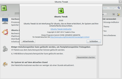
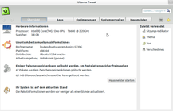
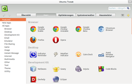
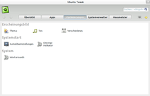
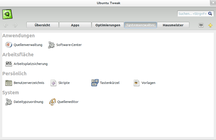
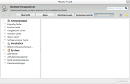
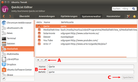

Ubuntu Tweak
Dieser Artikel wurde für die folgenden Ubuntu-Versionen getestet:
Ubuntu 14.04 Trusty Tahr
Zum Verständnis dieses Artikels sind folgende Seiten hilfreich:

Ubuntu Tweak  ist ein Konfigurationsprogramm für Ubuntu, das die Einstellungen zu verschiedenen Funktionen zusammenfasst und erklärt. Dieses Werkzeug ist zur Anpassung des Systems geeignet und bietet Anwendern einen recht einfachen Weg der Systemverwaltung. Auch wenn Ubuntu mit Version 11.04 den Desktop (vom klassischen GNOME zur Compiz-Erweiterung Unity) wechselte, konnte Ubuntu Tweak trotz der Namensgebung auch mit GNOME verwendet werden.
ist ein Konfigurationsprogramm für Ubuntu, das die Einstellungen zu verschiedenen Funktionen zusammenfasst und erklärt. Dieses Werkzeug ist zur Anpassung des Systems geeignet und bietet Anwendern einen recht einfachen Weg der Systemverwaltung. Auch wenn Ubuntu mit Version 11.04 den Desktop (vom klassischen GNOME zur Compiz-Erweiterung Unity) wechselte, konnte Ubuntu Tweak trotz der Namensgebung auch mit GNOME verwendet werden.
Ubuntu Tweak wurde im Mai 2016 offiziell eingestellt, nachdem schon längere Zeit keine Weiterentwicklung mehr stattfand. Nachfolger für alle Ubuntu-Versionen ab 14.04 sind das Unity Tweak Tool für Unity respektive das GNOME Tweak Tool für GNOME. Beide Programme sind Bestandteil der offiziellen Paketquellen.
Installation¶
Ubuntu Tweak ist kein Bestandteil der offiziellen Paketquellen. Zur Installation benötigt man daher ein "Personal Package Archiv" (PPA) [1] oder ein Fremdpaket.
PPA¶
Ubuntu-Versionen neuer als 14.04 werden vom PPA nicht unterstützt.
Adresszeile zum Hinzufügen des PPAs:
ppa:tualatrix/ppa
Hinweis!
Zusätzliche Fremdquellen können das System gefährden.
Ein PPA unterstützt nicht zwangsläufig alle Ubuntu-Versionen. Weitere Informationen sind der  PPA-Beschreibung des Eigentümers/Teams tualatrix zu entnehmen.
PPA-Beschreibung des Eigentümers/Teams tualatrix zu entnehmen.
Damit Pakete aus dem PPA genutzt werden können, müssen die Paketquellen neu eingelesen werden.
Nach dem Aktualisieren der Paketquellen kann man das folgende Paket installieren [2]:
ubuntu-tweak (ppa)
 mit apturl
mit apturl
Paketliste zum Kopieren:
sudo apt-get install ubuntu-tweak
sudo aptitude install ubuntu-tweak
Einstellungen¶
Achtung!
Trotz des recht einfachen Wegen der Systemverwaltung im Umgang mit Ubuntu Tweak sollten Anwender prinzipiell Vorsicht walten lassen, denn manche Einstellungen (wie z.B. unter "Optimierungen" oder "Systemverwalter" zu finden) haben teils tief ins System reichende Auswirkungen und können, wenn nicht mit Bedacht ausgeführt, auch negative Wirkungen auf das verwendete System haben.
Anschließend kann das Programm bei Ubuntu-Varianten mit einem Anwendungsmenü über den Eintrag "Systemwerkzeuge → Ubuntu Tweak" gestartet [4] werden.
Es werden nicht alle Einstellungen von Ubuntu Tweak im Detail, sondern nur Beispiele der verschiedenen Gebiete kurz erläutert. Viele der Menüs und deren Einstellungsmöglichkeiten sind recht einfach gehalten und meist selbsterklärend. Die einzelnen Hauptmenüpunkte enthalten Untermenüs, welche angeklickt die zugehörigen Optionen im aufklappenden Unterfenster anzeigen.
"Übersicht" - Zeigt eine Gesamtansicht aller hardware-, software- und systemrelevanten Informationen des verwendeten Systems. So z.B. welche Hardware und Arbeitsumgebung verwendet wird. Weiterhin kann man sehen, ob und wie viel Zwischenspeicher freigegeben werden kann und ob nicht mehr benötigte Pakete entfernt werden können. Ausgeführt wird diese Reinigung dann mit dem "Hausmeister". Außerdem finden sich noch Informationen über die Aktualität des Systems oder ob Aktualisierungen ("Updates") verfügbar sind.
"Apps" - Stellt dem Nutzer eine Übersicht verfügbarer Anwendungen aller Paketquellen (PPAs) zur Verfügung. Gestaffelt nach "Funktion", "Neue Apps" sowie "Alle Apps", kann aus verschiedenen Menüs ausgewählt werden, um die betreffenden Anwendungen durch Anklicken zu verwalten. Je nach Angebot und Verfügbarkeit lassen sich Pakete unterschiedlicher Entwicklungsstadien (stabil, beta, etc.) installieren sowie deinstallieren.
"Optimierung" - Bietet mit "Erscheinungsbild", "Systemstart" und "System" Möglichkeiten zur Konfiguration des Systems. Mit dem Menüpunkt: "Erscheinungsbild" können Elemente der Arbeitsumgebung, wie zum Beispiel Themen, Icons und weitere, verändert werden, außerdem auch der Systemton für Ereignisse und ausführende Aktionen. Unter "Verschiedenes" gibt es Einstellungen für Mauszeiger, Menü- und Schaltflächensymbole. Dies reicht vom Anzeigen der Menüs sowie Schaltflächen mit Icons, Begrenzen von Nutzerrechten über blinkenden Cursor bis hin zur Blinkrate des Zeigers.
"Systemverwalter" - Stellt mit "Anwendungen", "Arbeitsfläche", "Persönlich" und "System" weitere Anpassungsmöglichkeiten zur Feinjustierung bereit. Mit "Anwendungen" ist es möglich, die Paketquellen selbst sowie auch das Softwarecenter anzupassen. Unter dem Menü "Arbeitsfläche" und "Arbeitsplatzsicherung" kann man die Datensicherung konfigurieren oder auszuführen. Unter "Persönlich" befinden sich Anpassungsmöglichkeiten für das Nutzerverhalten. Beim Menü "System" können Dateizuordnungen zu Anwendungen angepasst sowie über den "Quelleneditor" die im System vorhandenen PPAs bearbeitet werden.
"Hausmeister" - Dies ist ein Werkzeug der besonderen Art: Es kann das System von gewissen Altlasten befreien. Mit dem Setzen des Häkchens an der entsprechenden Stelle wird festgelegt, welcher Bereich gesäubert wird. Unter "Caches" kann der Zwischenspeicher von verschiedenen Anwendungen (z.B. Webbrowser, Softwarecenter) gelöscht werden. Beim Reiter "System" können z.B. "Alte Kernel" gelöscht werden, wobei jedoch immer die Vorgängerversion des zuletzt installierten Kernels erhalten bleibt. Aber auch Reste von heruntergeladenen und wieder entfernten Paketen können auf diese Weise entfernt werden.
|  |
| Übersicht |
|  |
| Apps |
|  |
| Optimierungen |
|  |
| Systemverwalter |
|  |
| Hausmeister |
|  |
| Quicklist-Editor |
 - heise Open Source, 02/2010
- heise Open Source, 02/2010- Erstellt mit Inyoka
-
 2004 – 2017 ubuntuusers.de • Einige Rechte vorbehalten
2004 – 2017 ubuntuusers.de • Einige Rechte vorbehalten
Lizenz • Kontakt • Datenschutz • Impressum • Serverstatus -
Serverhousing gespendet von